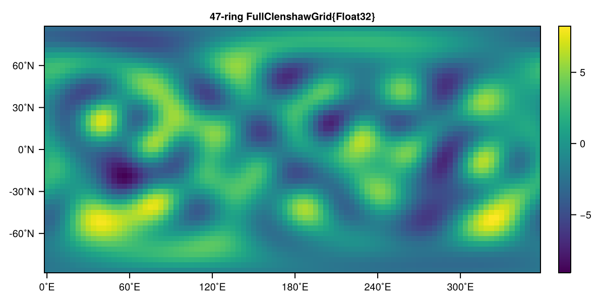
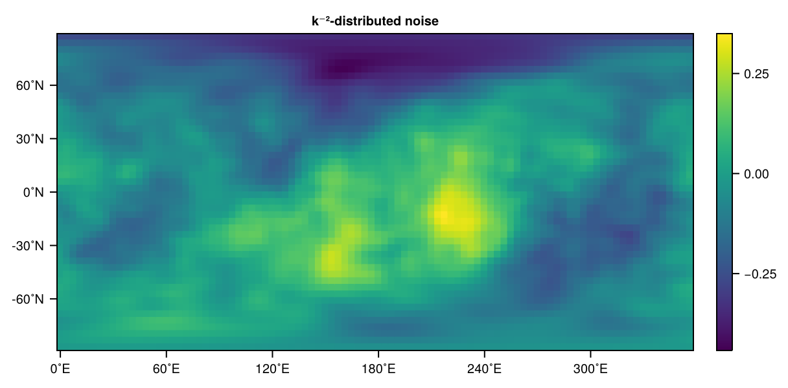

SpeedyTransforms
SpeedyTransforms is a submodule that has been developed for SpeedyWeather.jl which is technically independent (SpeedyWeather.jl however imports it) and can also be used without running simulations. It is just not put into its own respective repository for now.
The SpeedyTransforms are based on RingGrids and LowerTriangularMatrices to hold data in either grid-point space or in spectral space. So you want to read these sections first for clarifications how to work with these. We will also not discuss mathematical details of the Spherical Harmonic Transform here, but will focus on the usage of the SpeedyTransforms module.
The SpeedyTransforms module also implements the gradient operators $\nabla, \nabla \cdot, \nabla \times, \nabla^2, \nabla^{-2}$ in spectral space. Combined with the spectral transform, you could for example start with a velocity field in grid-point space, transform to spectral, compute its divergence and transform back to obtain the divergence in grid-point space. Examples are outlined in Gradient operators.
Example transform
Lets start with a simple transform. We could be using SpeedyWeather but to be more verbose these are the modules required to load
using SpeedyWeather.RingGrids
using SpeedyWeather.LowerTriangularMatrices
using SpeedyWeather.SpeedyTransformsAs an example, we want to transform the $l=m=1$ spherical harmonic from spectral space in alms to grid-point space.
alms = zeros(LowerTriangularMatrix{ComplexF64}, 6, 6) # spectral coefficients
alms[2, 2] = 1 # only l=1, m=1 harmonic
alms6×6 LowerTriangularMatrix{ComplexF64}:
0.0+0.0im 0.0+0.0im 0.0+0.0im 0.0+0.0im 0.0+0.0im 0.0+0.0im
0.0+0.0im 1.0+0.0im 0.0+0.0im 0.0+0.0im 0.0+0.0im 0.0+0.0im
0.0+0.0im 0.0+0.0im 0.0+0.0im 0.0+0.0im 0.0+0.0im 0.0+0.0im
0.0+0.0im 0.0+0.0im 0.0+0.0im 0.0+0.0im 0.0+0.0im 0.0+0.0im
0.0+0.0im 0.0+0.0im 0.0+0.0im 0.0+0.0im 0.0+0.0im 0.0+0.0im
0.0+0.0im 0.0+0.0im 0.0+0.0im 0.0+0.0im 0.0+0.0im 0.0+0.0imNow gridded is the function that takes spectral coefficients alms and converts them a grid-point space map
map = gridded(alms)128-element, 8-ring FullGaussianGrid{Float64}:
-0.19278869685896918
-0.17811353112752462
-0.13632219488509478
-0.07377704023518313
0.0
0.07377704023518313
0.13632219488509478
0.17811353112752462
0.19278869685896918
0.17811353112752462
⋮
0.17811353112752462
0.19278869685896918
0.17811353112752462
0.13632219488509478
0.07377704023518313
0.0
-0.07377704023518313
-0.13632219488509478
-0.17811353112752462By default, the gridded transforms onto a FullGaussianGrid unravelled here into a vector west to east, starting at the prime meridian, then north to south, see RingGrids. We can visualize map quickly with a UnicodePlot via plot (see Visualising RingGrid data)
import SpeedyWeather.RingGrids: plot # not necessary when `using SpeedyWeather`
plot(map) 8-ring FullGaussianGrid{Float64}
┌────────────────┐ 0.7
90 │▄▄▄▄▄▄▄▄▄▄▄▄▄▄▄▄│ ┌──┐
˚N │▄▄▄▄▄▄▄▄▄▄▄▄▄▄▄▄│ │▄▄│
│▄▄▄▄▄▄▄▄▄▄▄▄▄▄▄▄│ │▄▄│
-90 │▄▄▄▄▄▄▄▄▄▄▄▄▄▄▄▄│ └──┘
└────────────────┘ -0.7
0 ˚E 360 Yay! This is the what the $l=m=1$ spherical harmonic is supposed to look like! Now let's go back to spectral space with spectral
alms2 = spectral(map)6×6 LowerTriangularMatrix{ComplexF64}:
0.0+0.0im 0.0+0.0im 0.0+0.0im … 0.0+0.0im 0.0+0.0im
0.0+0.0im 1.0+0.0im 0.0+0.0im 0.0+0.0im 0.0+0.0im
0.0+0.0im 0.0+0.0im 0.0+0.0im 0.0+0.0im 0.0+0.0im
0.0+0.0im 3.75734e-16+0.0im 0.0+0.0im 0.0+0.0im 0.0+0.0im
0.0+0.0im 0.0+0.0im 0.0+0.0im 0.0+0.0im 0.0+0.0im
0.0+0.0im -1.63058e-17+0.0im 0.0+0.0im … 0.0+0.0im -2.47957e-17+0.0imComparing with alms from above you can see that the transform is exact up to a typical rounding error from Float64.
alms ≈ alms2trueYAY! The transform is typically idempotent, meaning that either space may hold information that is not exactly representable in the other but the first two-way transform will remove that so that subsequent transforms do not change this any further. However, also note here that the default FullGaussianGrid is an exact grid, inexact grids usually have a transform error that is larger than the rounding error from floating-point arithmetic.
Transform onto another grid
While the default grid for SpeedyTransforms is the FullGaussianGrid we can transform onto other grids by specifying Grid too
map = gridded(alms, Grid=HEALPixGrid)
plot(map) 7-ring HEALPixGrid{Float64}
┌──────────────┐ 0.7
90 │▄▄▄▄▄▄▄▄▄▄▄▄▄▄│ ┌──┐
˚N │▄▄▄▄▄▄▄▄▄▄▄▄▄▄│ │▄▄│
│▄▄▄▄▄▄▄▄▄▄▄▄▄▄│ │▄▄│
-90 │▄▄▄▄▄▄▄▄▄▄▄▄▄▄│ └──┘
└──────────────┘ -0.7
0 ˚E 360 which, if transformed back, however, can yield a larger transform error as discussed above
spectral(map)6×6 LowerTriangularMatrix{ComplexF64}:
0.0+0.0im 0.0+0.0im 0.0+0.0im … 0.0+0.0im 0.0+0.0im
0.0+0.0im 1.01215-1.4295e-17im 0.0+0.0im 0.0+0.0im 0.0+0.0im
0.0+0.0im 3.42299e-17+0.0im 0.0+0.0im 0.0+0.0im 0.0+0.0im
0.0+0.0im 0.0185292-1.63433e-17im 0.0+0.0im 0.0+0.0im 0.0+0.0im
0.0+0.0im -6.28844e-17+0.0im 0.0+0.0im 0.0+0.0im 0.0+0.0im
0.0+0.0im -0.0164851+1.42335e-17im 0.0+0.0im … 0.0+0.0im 0.0+0.0imOn such a coarse grid the transform error (absolute and relative) is about $10^{-2}$, this decreases for higher resolution. The gridded and spectral functions will choose a corresponding grid-spectral resolution (see Matching spectral and grid resolution) following quadratic truncation, but you can always truncate/interpolate in spectral space with spectral_truncation, spectral_interpolation which takes trunc = $l_{max} = m_{max}$ as second argument
spectral_truncation(alms, 2)3×3 LowerTriangularMatrix{ComplexF64}:
0.0+0.0im 0.0+0.0im 0.0+0.0im
0.0+0.0im 1.0+0.0im 0.0+0.0im
0.0+0.0im 0.0+0.0im 0.0+0.0imYay, we just chopped off $l > 2$ from alms which contained the harmonics up to degree and order 5 before. If the second argument in spectral_truncation is larger than alms then it will automatically call spectral_interpolation and vice versa. Also see Interpolation on RingGrids to interpolate directly between grids. If you want to control directly the resolution of the grid gridded is supposed to transform onto you have to provide a SpectralTransform instance. More on that now.
The SpectralTransform struct
Both spectral and gridded create an instance of SpectralTransform under the hood. This object contains all precomputed information that is required for the transform, either way: The Legendre polynomials, pre-planned Fourier transforms, precomputed gradient, divergence and curl operators, the spherical harmonic eigenvalues among others. Maybe the most intuitive way to create a SpectralTransform is to start with a SpectralGrid, which already defines which spectral resolution is supposed to be combined with a given grid.
using SpeedyWeather
spectral_grid = SpectralGrid(Float32, trunc=5, Grid=OctahedralGaussianGrid, dealiasing=3)SpectralGrid:
├ Spectral: T5 LowerTriangularMatrix{Complex{Float32}}, radius = 6.371e6 m
├ Grid: 12-ring OctahedralGaussianGrid{Float32}, 360 grid points
├ Resolution: 1190km (average)
└ Vertical: 8-level SigmaCoordinates(We using SpeedyWeather here as SpectralGrid is exported therein). We also specify the number format Float32 here to be used for the transform although this is the default anyway. From spectral_grid we now construct a SpectralTransform as follows
S = SpectralTransform(spectral_grid)SpectralTransform{Float32}:
├ Spectral: T5, 7x6 LowerTriangularMatrix{Complex{Float32}}
├ Grid: 12-ring OctahedralGaussianArray{Float32}
├ Truncation: dealiasing = 3 (cubic)
└ Legendre: recompute polynomials false (1.22 KB)Note that because we chose dealiasing=3 (cubic truncation) we now match a T5 spectral field with a 12-ring octahedral Gaussian grid, instead of the 8 rings as above. So going from dealiasing=2 (default) to dealiasing=3 increased our resolution on the grid while the spectral resolution remains the same. The SpectralTransform also has options for the recomputation or pre-computation of the Legendre polynomials, fore more information see (P)recompute Legendre polynomials.
Passing on S the SpectralTransform now allows us to transform directly on the grid defined therein.
map = gridded(alms, S)
plot(map) 12-ring OctahedralGaussianGrid{Float32}
┌────────────────────────┐ 0.7
90 │▄▄▄▄▄▄▄▄▄▄▄▄▄▄▄▄▄▄▄▄▄▄▄▄│ ┌──┐
│▄▄▄▄▄▄▄▄▄▄▄▄▄▄▄▄▄▄▄▄▄▄▄▄│ │▄▄│
˚N │▄▄▄▄▄▄▄▄▄▄▄▄▄▄▄▄▄▄▄▄▄▄▄▄│ │▄▄│
│▄▄▄▄▄▄▄▄▄▄▄▄▄▄▄▄▄▄▄▄▄▄▄▄│ │▄▄│
│▄▄▄▄▄▄▄▄▄▄▄▄▄▄▄▄▄▄▄▄▄▄▄▄│ │▄▄│
-90 │▄▄▄▄▄▄▄▄▄▄▄▄▄▄▄▄▄▄▄▄▄▄▄▄│ └──┘
└────────────────────────┘ -0.7
0 ˚E 360 Yay, this is again the $l=m=1$ harmonic, but this time on a slightly higher resolution OctahedralGaussianGrid as specified in the SpectralTransform S. Note that also the number format was converted on the fly to Float32 because that is the number format we specified in S! And from grid to spectral
alms2 = spectral(map, S)7×6 LowerTriangularMatrix{ComplexF32}:
2.05564f-9+0.0im 0.0+0.0im … 0.0+0.0im
0.0+0.0im 1.0-2.14344f-8im 0.0+0.0im
-1.3654f-9+0.0im 0.0+0.0im 0.0+0.0im
0.0+0.0im -2.66275f-8-6.93167f-11im 0.0+0.0im
-3.22443f-10+0.0im 0.0+0.0im 0.0+0.0im
0.0+0.0im -4.58858f-8-8.19443f-9im … 6.58519f-9+4.79414f-9im
1.85859f-9+0.0im 0.0+0.0im 0.0+0.0imAs you can see the rounding error is now more like $10^{-8}$ as we are using Float32 (the OctahedralGaussianGrid is another exact grid). Note, however, that the returned LowerTriangularMatrix is of size 7x6, not 6x6 what we started from. The underlying reason is that internally SpeedyWeather uses LowerTriangularMatrixs of size $l_{max} + 2 \times m_{max} + 1$. One $+1$ on both degree and order for 0-based harmonics versus 1-based matrix sizes, but an additional $+1$ for the degrees which is required by the meridional derivative. For consistency, all LowerTriangularMatrixs in SpeedyWeather.jl carry this additional degree but only the vector quantities explicitly make use of it. See Meridional derivative for details.
For this interface to SpeedyTransforms this means that on a grid-to-spectral transform you will get one more degree than orders of the spherical harmonics by default. You can, however, always truncate this additional degree, say to T5 (hence matrix size is 6x6)
spectral_truncation(alms2, 5, 5)6×6 LowerTriangularMatrix{ComplexF32}:
2.05564f-9+0.0im 0.0+0.0im … 0.0+0.0im
0.0+0.0im 1.0-2.14344f-8im 0.0+0.0im
-1.3654f-9+0.0im 0.0+0.0im 0.0+0.0im
0.0+0.0im -2.66275f-8-6.93167f-11im 0.0+0.0im
-3.22443f-10+0.0im 0.0+0.0im 0.0+0.0im
0.0+0.0im -4.58858f-8-8.19443f-9im … 6.58519f-9+4.79414f-9imspectral_truncation(alms2, 5) would have returned the same, a single argument is then assumed equal for both degrees and orders. Alternatively, you can also pass on the one_more_degree=false argument to the SpectralTransform constructor
S = SpectralTransform(spectral_grid, one_more_degree=false)SpectralTransform{Float32}:
├ Spectral: T5, 6x6 LowerTriangularMatrix{Complex{Float32}}
├ Grid: 12-ring OctahedralGaussianArray{Float32}
├ Truncation: dealiasing = 3 (cubic)
└ Legendre: recompute polynomials false (1.07 KB)As you can see the 7x6 LowerTriangularMatrix in the description above dropped down to 6x6 LowerTriangularMatrix, this is the size of the input that is expected (otherwise you will get a BoundsError).
Power spectrum
How to take some data and compute a power spectrum with SpeedyTransforms you may ask. Say you have some global data in a matrix m that looks, for example, like
m96×47 Matrix{Float32}:
-3.0252 -3.57212 -3.30937 -2.33692 … -2.18324 -2.28447 -2.23873
-3.11256 -3.71639 -3.44717 -2.39986 -2.00233 -2.15338 -2.16909
-3.19475 -3.85518 -3.5857 -2.47684 -1.80135 -2.01403 -2.09704
-3.2714 -3.98837 -3.72601 -2.57094 -1.58332 -1.86746 -2.02295
-3.34218 -4.11566 -3.86877 -2.68407 -1.35195 -1.7149 -1.9472
-3.40672 -4.23667 -4.01409 -2.81694 … -1.11139 -1.55768 -1.87021
-3.46467 -4.35082 -4.1616 -2.96902 -0.865967 -1.39725 -1.79242
-3.51568 -4.45741 -4.31036 -3.1387 -0.61991 -1.23507 -1.7143
-3.5594 -4.55554 -4.45894 -3.32342 -0.377113 -1.07258 -1.63629
-3.59549 -4.64419 -4.60538 -3.51982 -0.140927 -0.911141 -1.5589
⋮ ⋱ ⋮
-2.06498 -2.03003 -1.83889 -1.64862 -2.87626 -3.03185 -2.71673
-2.18259 -2.22217 -2.0395 -1.78596 -2.85942 -2.98526 -2.67867
-2.29841 -2.40962 -2.22878 -1.90134 -2.83463 -2.93071 -2.63666
-2.41201 -2.59201 -2.40703 -1.9963 … -2.79847 -2.86753 -2.59073
-2.52299 -2.76908 -2.57498 -2.07337 -2.74753 -2.79515 -2.54095
-2.63095 -2.94068 -2.73377 -2.13608 -2.67866 -2.71307 -2.48739
-2.73552 -3.10676 -2.88486 -2.18875 -2.5892 -2.62098 -2.43021
-2.83632 -3.26734 -3.02996 -2.23632 -2.47728 -2.51874 -2.36956
-2.933 -3.42244 -3.17086 -2.28399 … -2.34193 -2.40645 -2.30565You hopefully know which grid this data comes on, let us assume it is a regular latitude-longitude grid, which we call the FullClenshawGrid. Note that for the spectral transform this should not include the poles, so the 96x47 matrix size here corresponds to
We now wrap this matrix therefore to associate it with the necessary grid information
map = FullClenshawGrid(m)
using CairoMakie
heatmap(map)
Now we transform into spectral space and call power_spectrum(::LowerTriangularMatrix)
alms = spectral(map)
power = SpeedyTransforms.power_spectrum(alms)Which returns a vector of power at every wavenumber. By default this is normalized as average power per degree, you can change that with the keyword argument normalize=false. Plotting this yields
using UnicodePlots
k = 0:length(power)-1
lineplot(k, power, yscale=:log10, ylim=(1e-15, 10), xlim=extrema(k),
ylabel="power", xlabel="wavenumber", height=10, width=60) ┌────────────────────────────────────────────────────────────┐
10¹ │⠀⢠⡀⠀⠀⡰⠒⠤⠤⠤⠤⠤⠤⣀⣀⠤⠤⠤⠤⡄⠀⠀⠀⠀⠀⠀⠀⠀⠀⠀⠀⠀⠀⠀⠀⠀⠀⠀⠀⠀⠀⠀⠀⠀⠀⠀⠀⠀⠀⠀⠀⠀⠀⠀⠀⠀⠀⠀⠀⠀│
│⠔⠁⠈⠢⠊⠀⠀⠀⠀⠀⠀⠀⠀⠀⠀⠀⠀⠀⠀⢱⠀⠀⠀⠀⠀⠀⠀⠀⠀⠀⠀⠀⠀⠀⠀⠀⠀⠀⠀⠀⠀⠀⠀⠀⠀⠀⠀⠀⠀⠀⠀⠀⠀⠀⠀⠀⠀⠀⠀⠀│
│⠀⠀⠀⠀⠀⠀⠀⠀⠀⠀⠀⠀⠀⠀⠀⠀⠀⠀⠀⢸⠀⠀⠀⠀⠀⠀⠀⠀⠀⠀⠀⠀⠀⠀⠀⠀⠀⠀⠀⠀⠀⠀⠀⠀⠀⠀⠀⠀⠀⠀⠀⠀⠀⠀⠀⠀⠀⠀⠀⠀│
│⠀⠀⠀⠀⠀⠀⠀⠀⠀⠀⠀⠀⠀⠀⠀⠀⠀⠀⠀⠘⡄⠀⠀⠀⠀⠀⠀⠀⠀⠀⠀⠀⠀⠀⠀⠀⠀⠀⠀⠀⠀⠀⠀⠀⠀⠀⠀⠀⠀⠀⠀⠀⠀⠀⠀⠀⠀⠀⠀⠀│
power │⠀⠀⠀⠀⠀⠀⠀⠀⠀⠀⠀⠀⠀⠀⠀⠀⠀⠀⠀⠀⡇⠀⠀⠀⠀⠀⠀⠀⠀⠀⠀⠀⠀⠀⠀⠀⠀⠀⠀⠀⠀⠀⠀⠀⠀⠀⠀⠀⠀⠀⠀⠀⠀⠀⠀⠀⠀⠀⠀⠀│
│⠀⠀⠀⠀⠀⠀⠀⠀⠀⠀⠀⠀⠀⠀⠀⠀⠀⠀⠀⠀⢇⠀⠀⠀⠀⠀⠀⠀⠀⠀⠀⠀⠀⠀⠀⠀⠀⠀⠀⠀⠀⠀⠀⠀⠀⠀⠀⠀⠀⠀⠀⠀⠀⠀⠀⠀⠀⠀⠀⠀│
│⠀⠀⠀⠀⠀⠀⠀⠀⠀⠀⠀⠀⠀⠀⠀⠀⠀⠀⠀⠀⢸⠀⠀⠀⠀⠀⠀⠀⠀⠀⠀⠀⠀⠀⠀⠀⠀⠀⠀⠀⠀⠀⠀⠀⠀⠀⠀⠀⠀⠀⠀⠀⠀⠀⠀⠀⠀⠀⠀⠀│
│⠀⠀⠀⠀⠀⠀⠀⠀⠀⠀⠀⠀⠀⠀⠀⠀⠀⠀⠀⠀⢸⠀⠀⠀⠀⠀⠀⠀⠀⠀⠀⠀⠀⠀⠀⠀⠀⠀⠀⠀⠀⠀⠀⠀⠀⠀⠀⠀⠀⠀⠀⠀⠀⠀⠀⠀⠀⠀⠀⠀│
│⠀⠀⠀⠀⠀⠀⠀⠀⠀⠀⠀⠀⠀⠀⠀⠀⠀⠀⠀⠀⠀⡇⠀⡀⠀⠀⠀⡀⠀⠀⢀⠀⠀⠀⢀⠀⠀⠀⢀⡀⠀⠀⣀⡀⠀⠀⣀⠀⠀⢀⣀⠀⠀⢀⣀⠀⠀⢀⡀⠀│
10⁻¹⁵ │⠀⠀⠀⠀⠀⠀⠀⠀⠀⠀⠀⠀⠀⠀⠀⠀⠀⠀⠀⠀⠀⠉⠉⠈⠑⠊⠉⠈⠑⠒⠉⠉⠒⠊⠁⠉⠒⠊⠁⠈⠑⠉⠀⠈⠑⠉⠀⠑⠊⠁⠀⠉⠊⠁⠀⠉⠉⠁⠈⠉│
└────────────────────────────────────────────────────────────┘
⠀0⠀⠀⠀⠀⠀⠀⠀⠀⠀⠀⠀⠀⠀⠀⠀⠀⠀⠀⠀⠀⠀⠀⠀⠀⠀⠀⠀⠀⠀⠀⠀⠀⠀⠀⠀⠀⠀⠀⠀⠀⠀⠀⠀⠀⠀⠀⠀⠀⠀⠀⠀⠀⠀⠀⠀⠀⠀31⠀
⠀⠀⠀⠀⠀⠀⠀⠀⠀⠀⠀⠀⠀⠀⠀⠀⠀⠀⠀⠀⠀⠀⠀⠀⠀⠀wavenumber⠀⠀⠀⠀⠀⠀⠀⠀⠀⠀⠀⠀⠀⠀⠀⠀⠀⠀⠀⠀⠀⠀⠀⠀⠀⠀ The power spectrum of our data is about 1 up to wavenumber 10 and then close to zero for higher wavenumbers (which is in fact how we constructed this fake data). Let us turn this around and use SpeedyTransforms to create random noise in spectral space to be used in grid-point space!
Example: Creating k^n-distributed noise
How would we construct random noise in spectral space that follows a certain power law and transform it back into grid-point space? Define the wavenumber $k$ for T31, the spectral resolution we are interested in. (We start from 1 instead of 0 to avoid zero to the power of something negative). Now create some normally distributed spectral coefficients but scale them down for higher wavenumbers with $k^{-2}$
k = 1:32
alms = randn(LowerTriangularMatrix{Complex{Float32}}, 32, 32)
alms .*= k.^-232×32 LowerTriangularMatrix{ComplexF32}:
-0.131774+0.317226im … 0.0+0.0im
-0.151011+0.0200534im 0.0+0.0im
-0.161365+0.00928334im 0.0+0.0im
-0.0594779-0.00830904im 0.0+0.0im
-0.0361227+0.0174691im 0.0+0.0im
-0.0070124-0.0290734im … 0.0+0.0im
-0.000597823+0.0184872im 0.0+0.0im
-0.00187821-0.0052653im 0.0+0.0im
-0.00579414-0.00119612im 0.0+0.0im
0.00104939+0.000585577im 0.0+0.0im
⋮ ⋱
-0.000350399-0.00103139im 0.0+0.0im
0.00065432-0.00144415im 0.0+0.0im
-2.81277f-5-0.000716462im … 0.0+0.0im
-0.000208153+0.000194458im 0.0+0.0im
0.000191694+0.00103058im 0.0+0.0im
-5.37092f-5-0.000376433im 0.0+0.0im
-0.000553174-0.00135523im 0.0+0.0im
0.000278503+0.000431349im … 0.0+0.0im
0.00045926-0.000424608im -9.0029f-5-0.000632917imAwesome. For higher degrees and orders the amplitude clearly decreases! Now to grid-point space and let us visualize the result
map = gridded(alms)
using CairoMakie
heatmap(map, title="k⁻²-distributed noise")
You can always access the underlying data in map via map.data in case you need to get rid of the wrapping into a grid again!
(P)recompute Legendre polynomials
The spectral transform uses a Legendre transform in meridional direction. For this the Legendre polynomials are required, at each latitude ring this is a $l_{max} \times m_{max}$ lower triangular matrix. Storing precomputed Legendre polynomials therefore quickly increase in size with resolution. One can recompute them to save memory, but that uses more arithmetic operations. There is therefore a memory-compute tradeoff.
For a single transform, there is no need to precompute the polynomials as the SpectralTransform object will be garbage collected again anyway. For low resolution simulations with many repeated small transforms it makes sense to precompute the polynomials and SpeedyWeather.jl does that automatically anyway. At very high resolution the polynomials may, however, become prohibitively large. An example at T127, about 100km resolution
spectral_grid = SpectralGrid(trunc=127)
SpectralTransform(spectral_grid, recompute_legendre=false)SpectralTransform{Float32}:
├ Spectral: T127, 129x128 LowerTriangularMatrix{Complex{Float32}}
├ Grid: 192-ring OctahedralGaussianArray{Float32}
├ Truncation: dealiasing = 2 (quadratic)
└ Legendre: recompute polynomials false (3.23 MB)the polynomials are about 3MB in size. Easy that is not much. But at T1023 on the O1536 octahedral Gaussian grid, this is already 1.5GB, cubically increasing with the spectral truncation T. recompute_legendre=true (default false when constructing a SpectralTransform object which may be reused) would lower this to kilobytes
SpectralTransform(spectral_grid, recompute_legendre=true)SpectralTransform{Float32}:
├ Spectral: T127, 129x128 LowerTriangularMatrix{Complex{Float32}}
├ Grid: 192-ring OctahedralGaussianArray{Float32}
├ Truncation: dealiasing = 2 (quadratic)
└ Legendre: recompute polynomials true (33.60 KB)Functions and type index
SpeedyWeather.SpeedyTransforms.SpectralTransform — TypeS = SpectralTransform{NF<:AbstractFloat}(...)SpectralTransform struct that contains all parameters and preallocated arrays for the spectral transform.
SpeedyWeather.SpeedyTransforms.SpectralTransform — MethodS = SpectralTransform( alms::AbstractMatrix{Complex{NF}};
recompute_legendre::Bool=true,
Grid::Type{<:AbstractGrid}=DEFAULT_GRID)Generator function for a SpectralTransform struct based on the size of the spectral coefficients alms and the grid Grid. Recomputes the Legendre polynomials by default.
SpeedyWeather.SpeedyTransforms.SpectralTransform — MethodS = SpectralTransform( map::AbstractGrid;
recompute_legendre::Bool=true)Generator function for a SpectralTransform struct based on the size and grid type of gridded field map. Recomputes the Legendre polynomials by default.
SpeedyWeather.SpeedyTransforms.SpectralTransform — MethodSpectralTransform(
::Type{NF},
Grid::Type{<:AbstractGridArray},
lmax::Int64,
mmax::Int64;
recompute_legendre,
legendre_shortcut,
dealiasing
) -> SpectralTransform
Generator function for a SpectralTransform struct. With NF the number format, Grid the grid type <:AbstractGrid and spectral truncation lmax, mmax this function sets up necessary constants for the spetral transform. Also plans the Fourier transforms, retrieves the colatitudes, and preallocates the Legendre polynomials (if recompute_legendre == false) and quadrature weights.
SpeedyWeather.RingGrids.get_nlat_half — Functionget_nlat_half(trunc::Integer) -> Any
get_nlat_half(trunc::Integer, dealiasing::Real) -> Any
For the spectral truncation trunc (e.g. 31 for T31) return the grid resolution parameter nlat_half (number of latitude rings on one hemisphere including the Equator) following a dealiasing parameter (default 2) to match spectral and grid resolution.
SpeedyWeather.SpeedyTransforms.UV_from_vor! — MethodUV_from_vor!(
U::LowerTriangularArray{Complex{NF<:AbstractFloat}, 2, Array{Complex{NF<:AbstractFloat}, 1}},
V::LowerTriangularArray{Complex{NF<:AbstractFloat}, 2, Array{Complex{NF<:AbstractFloat}, 1}},
vor::LowerTriangularArray{Complex{NF<:AbstractFloat}, 2, Array{Complex{NF<:AbstractFloat}, 1}},
S::SpectralTransform{NF<:AbstractFloat}
)
Get U, V (=(u, v)*coslat) from vorticity ζ spectral space (divergence D=0) Two operations are combined into a single linear operation. First, invert the spherical Laplace ∇² operator to get stream function from vorticity. Then compute zonal and meridional gradients to get U, V. Acts on the unit sphere, i.e. it omits any radius scaling as all inplace gradient operators.
SpeedyWeather.SpeedyTransforms.UV_from_vordiv! — MethodUV_from_vordiv!(
U::LowerTriangularArray{Complex{NF<:AbstractFloat}, 2, Array{Complex{NF<:AbstractFloat}, 1}},
V::LowerTriangularArray{Complex{NF<:AbstractFloat}, 2, Array{Complex{NF<:AbstractFloat}, 1}},
vor::LowerTriangularArray{Complex{NF<:AbstractFloat}, 2, Array{Complex{NF<:AbstractFloat}, 1}},
div::LowerTriangularArray{Complex{NF<:AbstractFloat}, 2, Array{Complex{NF<:AbstractFloat}, 1}},
S::SpectralTransform{NF<:AbstractFloat}
) -> Complex
Get U, V (=(u, v)*coslat) from vorticity ζ and divergence D in spectral space. Two operations are combined into a single linear operation. First, invert the spherical Laplace ∇² operator to get stream function from vorticity and velocity potential from divergence. Then compute zonal and meridional gradients to get U, V. Acts on the unit sphere, i.e. it omits any radius scaling as all inplace gradient operators.
SpeedyWeather.SpeedyTransforms._divergence! — Method_divergence!(
kernel,
div::LowerTriangularArray{Complex{NF<:AbstractFloat}, 2, Array{Complex{NF<:AbstractFloat}, 1}},
u::LowerTriangularArray{Complex{NF<:AbstractFloat}, 2, Array{Complex{NF<:AbstractFloat}, 1}},
v::LowerTriangularArray{Complex{NF<:AbstractFloat}, 2, Array{Complex{NF<:AbstractFloat}, 1}},
S::SpectralTransform{NF<:AbstractFloat}
)
Generic divergence function of vector u, v that writes into the output into div. Generic as it uses the kernel kernel such that curl, div, add or flipsign options are provided through kernel, but otherwise a single function is used. Acts on the unit sphere, i.e. it omits 1/radius scaling as all inplace gradient operators.
SpeedyWeather.SpeedyTransforms.curl! — Methodcurl!(
curl::LowerTriangularMatrix,
u::LowerTriangularMatrix,
v::LowerTriangularMatrix,
S::SpectralTransform;
flipsign,
add
)
Curl of a vector u, v written into curl, curl = ∇×(u, v). u, v are expected to have a 1/coslat-scaling included, otherwise curl is scaled. Acts on the unit sphere, i.e. it omits 1/radius scaling as all inplace gradient operators. flipsign option calculates -∇×(u, v) instead. add option calculates curl += ∇×(u, v) instead. flipsign and add can be combined. This functions only creates the kernel and calls the generic divergence function _divergence! subsequently with flipped u, v -> v, u for the curl.
SpeedyWeather.SpeedyTransforms.curl — Methodcurl(
u::LowerTriangularMatrix,
v::LowerTriangularMatrix;
radius
) -> Any
Curl (∇×) of two vector components u, v of size (n+1)xn, the last row will be set to zero in the returned LowerTriangularMatrix. This function requires both u, v to be transforms of fields that are scaled with 1/cos(lat). Acts on the unit sphere, i.e. it omits 1/radius scaling unless radius keyword argument is provided. An example usage is therefore
RingGrids.scale_coslat⁻¹!(u_grid)
RingGrids.scale_coslat⁻¹!(v_grid)
u = spectral(u_grid)
v = spectral(v_grid)
vor = curl(u, v, radius=6.371e6)
vor_grid = gridded(div)SpeedyWeather.SpeedyTransforms.curl — Methodcurl(u::AbstractGrid, v::AbstractGrid; kwargs...) -> Any
Curl (∇×) of two vector components u, v on a grid. Applies 1/coslat scaling, transforms to spectral space and returns the spectral curl. Acts on the unit sphere, i.e. it omits 1/radius scaling unless radius keyword argument is provided.
SpeedyWeather.SpeedyTransforms.divergence! — Methoddivergence!(
div::LowerTriangularMatrix,
u::LowerTriangularMatrix,
v::LowerTriangularMatrix,
S::SpectralTransform;
flipsign,
add
)
Divergence of a vector u, v written into div, div = ∇⋅(u, v). u, v are expected to have a 1/coslat-scaling included, otherwise div is scaled. Acts on the unit sphere, i.e. it omits 1/radius scaling as all inplace gradient operators. flipsign option calculates -∇⋅(u, v) instead. add option calculates div += ∇⋅(u, v) instead. flipsign and add can be combined. This functions only creates the kernel and calls the generic divergence function _divergence! subsequently.
SpeedyWeather.SpeedyTransforms.divergence — Methoddivergence(
u::LowerTriangularMatrix,
v::LowerTriangularMatrix;
radius
) -> Any
Divergence (∇⋅) of two vector components u, v which need to have size (n+1)xn, the last row will be set to zero in the returned LowerTriangularMatrix. This function requires both u, v to be transforms of fields that are scaled with 1/cos(lat). Acts on the unit sphere, i.e. it omits 1/radius scaling unless radius keyword argument is provided. An example usage is therefore
RingGrids.scale_coslat⁻¹!(u_grid)
RingGrids.scale_coslat⁻¹!(v_grid)
u = spectral(u_grid, one_more_degree=true)
v = spectral(v_grid, one_more_degree=true)
div = divergence(u, v, radius = 6.371e6)
div_grid = gridded(div)SpeedyWeather.SpeedyTransforms.divergence — Methoddivergence(
u::AbstractGrid,
v::AbstractGrid;
kwargs...
) -> Any
Divergence (∇⋅) of two vector components u, v on a grid. Applies 1/coslat scaling, transforms to spectral space and returns the spectral divergence. Acts on the unit sphere, i.e. it omits 1/radius scaling unless radius keyword argument is provided.
SpeedyWeather.SpeedyTransforms.get_recursion_factors — Methodget_recursion_factors( ::Type{NF}, # number format NF
lmax::Int, # max degree l of spherical harmonics (0-based here)
mmax::Int # max order m of spherical harmonics
) where {NF<:AbstractFloat}Returns a matrix of recursion factors ϵ up to degree lmax and order mmax of number format NF.
SpeedyWeather.SpeedyTransforms.get_truncation — Functionget_truncation(nlat_half::Integer) -> Any
get_truncation(nlat_half::Integer, dealiasing::Real) -> Any
For the grid resolution parameter nlat_half (e.g. 24 for a 48-ring FullGaussianGrid) return the spectral truncation trunc (max degree of spherical harmonics) following a dealiasing parameter (default 2) to match spectral and grid resolution.
SpeedyWeather.SpeedyTransforms.gridded! — Methodgridded!( map::AbstractGrid,
alms::LowerTriangularMatrix,
S::SpectralTransform)Spectral transform (spectral to grid) of the spherical harmonic coefficients alms to a gridded field map. The spectral transform is number format-flexible as long as the parametric types of map, alms, S are identical. The spectral transform is grid-flexible as long as the typeof(map)<:AbstractGrid. Uses the precalculated arrays, FFT plans and other constants in the SpectralTransform struct S.
SpeedyWeather.SpeedyTransforms.gridded — Methodgridded(
alms::AbstractArray{T<:Complex{NF}, 2};
recompute_legendre,
Grid,
kwargs...
) -> Any
Spectral transform (spectral to grid space) from spherical coefficients alms to a newly allocated gridded field map. Based on the size of alms the grid type grid, the spatial resolution is retrieved based on the truncation defined for grid. SpectralTransform struct S is allocated to execute gridded(alms, S).
SpeedyWeather.SpeedyTransforms.gridded — Methodgridded(
alms::AbstractMatrix,
S::SpectralTransform{NF};
kwargs...
) -> Any
Spectral transform (spectral to grid space) from spherical coefficients alms to a newly allocated gridded field map with precalculated properties based on the SpectralTransform struct S. alms is converted to a LowerTriangularMatrix to execute the in-place gridded!.
SpeedyWeather.SpeedyTransforms.is_power_2 — Methodtrue/false = is_power_2(i::Integer)Checks whether an integer i is a power of 2, i.e. i = 2^k, with k = 0, 1, 2, 3, ....
SpeedyWeather.SpeedyTransforms.roundup_fft — Methodm = roundup_fft(n::Int;
small_primes::Vector{Int}=[2, 3, 5])Returns an integer m >= n with only small prime factors 2, 3 (default, others can be specified with the keyword argument small_primes) to obtain an efficiently fourier-transformable number of longitudes, m = 2^i * 3^j * 5^k >= n, with i, j, k >=0.
SpeedyWeather.SpeedyTransforms.spectral! — Methodspectral!( alms::LowerTriangularMatrix,
map::AbstractGrid,
S::SpectralTransform)Spectral transform (grid to spectral space) from the gridded field map on a grid<:AbstractGrid to a LowerTriangularMatrix of spherical harmonic coefficients alms. Uses FFT in the zonal direction, and a Legendre Transform in the meridional direction exploiting symmetries. The spectral transform is number format-flexible as long as the parametric types of map, alms, S are identical. The spectral transform is grid-flexible as long as the typeof(map)<:AbstractGrid. Uses the precalculated arrays, FFT plans and other constants in the SpectralTransform struct S.
SpeedyWeather.SpeedyTransforms.spectral — Methodspectral(
map::AbstractMatrix;
Grid,
kwargs...
) -> LowerTriangularArray{Complex{NF}, 2, Array{Complex{NF}, 1}} where NF<:AbstractFloat
Converts map to grid(map) to execute spectral(map::AbstractGrid; kwargs...).
SpeedyWeather.SpeedyTransforms.spectral — Methodspectral(
map::AbstractGridArray{NF, 1, Array{NF, 1}};
recompute_legendre,
one_more_degree
) -> LowerTriangularArray{Complex{NF}, 2, Array{Complex{NF}, 1}} where NF<:AbstractFloat
Converts map to Grid(map) to execute spectral(map::AbstractGrid; kwargs...).
SpeedyWeather.SpeedyTransforms.spectral — Methodspectral(
map::AbstractGrid,
S::SpectralTransform{NF}
) -> LowerTriangularArray{Complex{NF}, 2, Array{Complex{NF}, 1}} where NF<:AbstractFloat
Spectral transform (grid to spectral) map to grid(map) to execute spectral(map::AbstractGrid; kwargs...).
SpeedyWeather.SpeedyTransforms.spectral_interpolation — Methodalms_interp = spectral_interpolation( ::Type{NF},
alms::LowerTriangularMatrix,
ltrunc::Integer,
mtrunc::Integer
) where NFReturns a spectral coefficient matrix alms_interp that is alms padded with zeros to interpolate in spectral space. If trunc is smaller or equal to the implicit truncation in alms obtained from its size than spectral_truncation is automatically called instead, returning alms_trunc, a coefficient matrix that is smaller than alms, implicitly setting higher degrees and orders to zero.
SpeedyWeather.SpeedyTransforms.spectral_smoothing! — Methodspectral_smoothing!(A::LowerTriangularMatrix, c; power=1)Smooth the spectral field A following A = (1-(1-c)∇²ⁿ) with power n of a normalised Laplacian so that the highest degree lmax is dampened by multiplication with c. Anti-diffusion for c>1.
SpeedyWeather.SpeedyTransforms.spectral_smoothing — MethodA_smooth = spectral_smoothing(A::LowerTriangularMatrix, c; power=1)Smooth the spectral field A following A_smooth = (1-c*∇²ⁿ)A with power n of a normalised Laplacian so that the highest degree lmax is dampened by multiplication with c. Anti-diffusion for c<0.
SpeedyWeather.SpeedyTransforms.spectral_truncation! — Methodspectral_truncation!(alms, trunc)Truncate spectral coefficients alms in-place by setting (a) the upper right triangle to zero and (b) all coefficients for which the degree l is larger than the truncation trunc.
SpeedyWeather.SpeedyTransforms.spectral_truncation! — Methodspectral_truncation!(alms)Truncate spectral coefficients alms in-place by setting the upper right triangle to zero. This is to enforce that all coefficients for which the degree l is larger than order m are zero.
SpeedyWeather.SpeedyTransforms.spectral_truncation! — Methodspectral_truncation!(alms::AbstractMatrix, ltrunc::Integer, mtrunc::Integer)Truncate spectral coefficients alms in-place by setting (a) the upper right triangle to zero and (b) all coefficients for which the degree l is larger than the truncation ltrunc or order m larger than the truncaction mtrunc.
SpeedyWeather.SpeedyTransforms.spectral_truncation! — Methodspectral_truncation!(alms::LowerTriangularMatrix, ltrunc::Integer, mtrunc::Integer)Truncate spectral coefficients alms in-place by setting all coefficients for which the degree l is larger than the truncation ltrunc or order m larger than the truncaction mtrunc. Similar to spectral_truncation!(::AbstractMatrix, ...) but skips the upper triangle which is zero by design for LowerTriangularMatrix.
SpeedyWeather.SpeedyTransforms.spectral_truncation — Methodalms_trunc = spectral_truncation(alms, trunc)Returns a spectral coefficient matrix alms_trunc that is truncated from alms to the size (trunc+1)². alms_trunc only contains those coefficient of alms for which m, l ≤ trunc, and l ≥ m are zero anyway. If trunc is larger than the implicit truncation in alms obtained from its size than spectral_interpolation is automatically called instead, returning alms_interp, a coefficient matrix that is larger than alms with padded zero coefficients.
SpeedyWeather.SpeedyTransforms.ϵlm — Methodϵ = ϵ(l, m)Recursion factors ϵ as a function of degree l and order m (0-based) of the spherical harmonics. ϵ(l, m) = sqrt((l^2-m^2)/(4*l^2-1)) with default number format Float64.
SpeedyWeather.SpeedyTransforms.ϵlm — Methodϵ = ϵ(NF, l, m)Recursion factors ϵ as a function of degree l and order m (0-based) of the spherical harmonics. ϵ(l, m) = sqrt((l^2-m^2)/(4*l^2-1)) and then converted to number format NF.
SpeedyWeather.SpeedyTransforms.∇! — Method∇!(
dpdx::LowerTriangularArray{Complex{NF<:AbstractFloat}, 2, Array{Complex{NF<:AbstractFloat}, 1}},
dpdy::LowerTriangularArray{Complex{NF<:AbstractFloat}, 2, Array{Complex{NF<:AbstractFloat}, 1}},
p::LowerTriangularArray{Complex{NF<:AbstractFloat}, 2, Array{Complex{NF<:AbstractFloat}, 1}},
S::SpectralTransform{NF<:AbstractFloat}
) -> Tuple{LowerTriangularArray{Complex{NF}, 2, Array{Complex{NF}, 1}} where NF<:AbstractFloat, LowerTriangularArray{Complex{NF}, 2, Array{Complex{NF}, 1}} where NF<:AbstractFloat}
Applies the gradient operator ∇ applied to input p and stores the result in dpdx (zonal derivative) and dpdy (meridional derivative). The gradient operator acts on the unit sphere and therefore omits the 1/radius scaling
SpeedyWeather.SpeedyTransforms.∇ — Method∇(
grid::AbstractGrid,
S::SpectralTransform;
kwargs...
) -> Tuple{Any, Any}
The zonal and meridional gradient of grid. Transform to spectral space, takes the gradient and unscales the 1/coslat scaling in the gradient. Acts on the unit-sphere, i.e. it omits 1/radius scaling unless radius keyword argument is provided. Makes use of an existing spectral transform S.
SpeedyWeather.SpeedyTransforms.∇ — Method∇(grid::AbstractGrid; kwargs...) -> Tuple{Any, Any}
The zonal and meridional gradient of grid. Transform to spectral space, takes the gradient and unscales the 1/coslat scaling in the gradient. Acts on the unit-sphere, i.e. it omits 1/radius scaling unless radius keyword argument is provided.
SpeedyWeather.SpeedyTransforms.∇ — Method∇(
p::LowerTriangularMatrix,
S::SpectralTransform;
radius
) -> Tuple{Any, Any}
The zonal and meridional gradient of p using an existing SpectralTransform S. Acts on the unit sphere, i.e. it omits 1/radius scaling unless radius keyword argument is provided.
SpeedyWeather.SpeedyTransforms.∇ — Method∇(p::LowerTriangularMatrix; kwargs...)
The zonal and meridional gradient of p. Precomputes a SpectralTransform S. Acts on the unit-sphere, i.e. it omits 1/radius scaling unless radius keyword argument is provided.
SpeedyWeather.SpeedyTransforms.∇²! — Method∇²!(
∇²alms::LowerTriangularArray{Complex{NF<:AbstractFloat}, 2, Array{Complex{NF<:AbstractFloat}, 1}},
alms::LowerTriangularArray{Complex{NF<:AbstractFloat}, 2, Array{Complex{NF<:AbstractFloat}, 1}},
S::SpectralTransform{NF<:AbstractFloat};
add,
flipsign,
inverse
) -> LowerTriangularArray{Complex{NF}, 2, Array{Complex{NF}, 1}} where NF<:AbstractFloat
Laplace operator ∇² applied to the spectral coefficients alms in spherical coordinates. The eigenvalues which are precomputed in S. ∇²! is the in-place version which directly stores the output in the first argument ∇²alms. Acts on the unit sphere, i.e. it omits any radius scaling as all inplace gradient operators.
Keyword arguments
add=trueadds the ∇²(alms) to the outputflipsign=truecomputes -∇²(alms) insteadinverse=truecomputes ∇⁻²(alms) instead
Default is add=false, flipsign=false, inverse=false. These options can be combined.
SpeedyWeather.SpeedyTransforms.∇² — Method∇²(
alms::LowerTriangularMatrix,
S::SpectralTransform;
radius
) -> Any
Laplace operator ∇² applied to input alms, using precomputed eigenvalues from S. Acts on the unit sphere, i.e. it omits 1/radius^2 scaling unless radius keyword argument is provided.
SpeedyWeather.SpeedyTransforms.∇² — Method∇²(alms::LowerTriangularMatrix; kwargs...) -> Any
Returns the Laplace operator ∇² applied to input alms. Acts on the unit sphere, i.e. it omits 1/radius^2 scaling unless radius keyword argument is provided.
SpeedyWeather.SpeedyTransforms.∇⁻²! — Method∇⁻²!(
∇⁻²alms::LowerTriangularArray{Complex{NF<:AbstractFloat}, 2, Array{Complex{NF<:AbstractFloat}, 1}},
alms::LowerTriangularArray{Complex{NF<:AbstractFloat}, 2, Array{Complex{NF<:AbstractFloat}, 1}},
S::SpectralTransform{NF<:AbstractFloat};
add,
flipsign
) -> LowerTriangularArray{Complex{NF}, 2, Array{Complex{NF}, 1}} where NF<:AbstractFloat
Calls ∇²!(∇⁻²alms, alms, S; add, flipsign, inverse=true).
SpeedyWeather.SpeedyTransforms.∇⁻² — Method∇⁻²(
∇²alms::LowerTriangularMatrix,
S::SpectralTransform;
radius
) -> Any
InverseLaplace operator ∇⁻² applied to input alms, using precomputed eigenvalues from S. Acts on the unit sphere, i.e. it omits radius^2 scaling unless radius keyword argument is provided.
SpeedyWeather.SpeedyTransforms.∇⁻² — Method∇⁻²(∇²alms::LowerTriangularMatrix; kwargs...) -> Any
Returns the inverse Laplace operator ∇⁻² applied to input alms. Acts on the unit sphere, i.e. it omits radius^2 scaling unless radius keyword argument is provided.